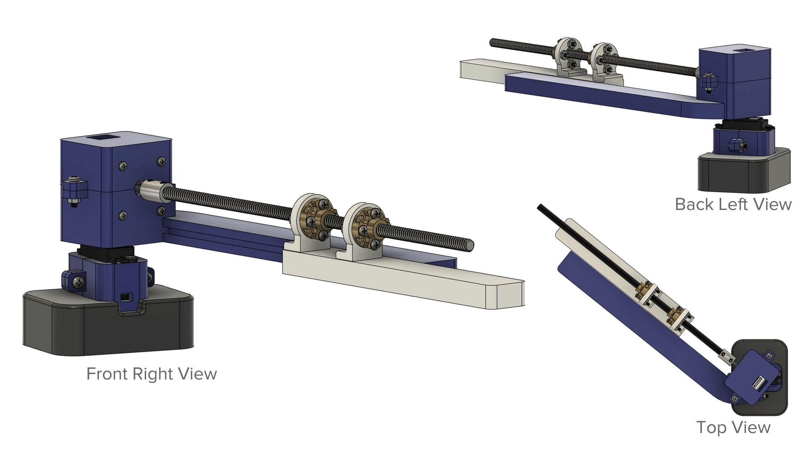
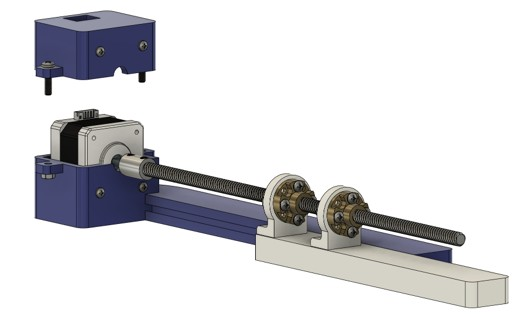
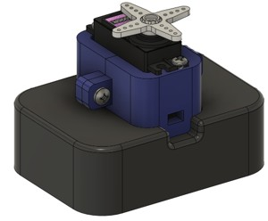

Feb – Apr 2026 · Praxis Engineering Design · Mechanical Integration Lead
Automated Solar Panel Cleaning Mechanism
An electro-mechanical sweeping and extending brush system designed to mitigate dust accumulation on residential solar panels in North Africa without water consumption.

Key Specifications
| Measured Performance | 82% dust removal efficiency across test panel |
|---|---|
| Actuation | NEMA 17 Stepper Motor (lead screw extension) + MG996R Servo (180° sweep) |
| Control Electronics | Raspberry Pi Pico + DRV8833 motor driver |
| Test Panel Dimensions | 498 mm × 299 mm scaled mock solar panel |
| CAD & Fabrication | Autodesk Fusion, 3D-printed custom housings |
Design Significance
In arid residential regions such as North Africa, heavy dust accumulation significantly degrades photovoltaic power output, while water scarcity makes wet washing impractical. Our team designed a dry, automated brush mechanism capable of full rectangular panel coverage from a single side mount.
Mechanical Design & Integration
- Simultaneous Polar-Linear Kinematics: Combined a 180° rotational sweep (MG996R servo) with a telescoping lead-screw extension arm (NEMA 17 stepper + shaft coupler + lead nut) so a nylon brush reaches the corners of a rectangular panel.
- Enclosure & Packaging: Designed custom multi-part stepper and servo housings in Autodesk Fusion with tolerances and considerations of printer nozzle diameter to protect drive components while minimizing panel shading.
- Verification & Testing: Performed proxy testing with the prototype, passed 17 of 22 engineering specifications while validating coordinated 180° sweep kinematics and achieving 82% particulate removal efficiency.
CAD Iteration Process
For a more detailed CAD design process with complete iterative design choices, view or download the design process document below:
📄 View Solar Brush CAD Design Process (PDF)

